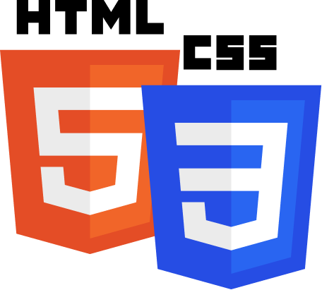
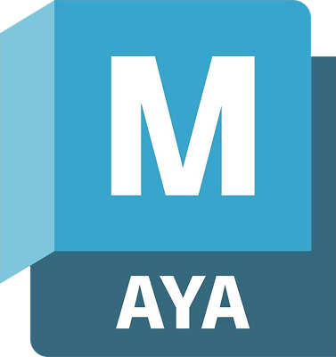

BIO 简介
Yuan (Joel) Xiao 肖源 (Joel)
Game & Interaction Designer 游戏交互设计师
I specialize in crafting intuitive experience that are clear, playful, and emotionally resonant. My expertise spans the entire player journey, from architecting overall systems and loops to defining seamless flows and fine-tuning the micro-interactions that shape pacing and rhythm. Through a disciplined process of user research, detailed wireframing, rapid prototyping, and continuous ideation, I refine core elements such as controls, feedback, and affordances to minimize cognitive load. 我致力于打造直观、清晰、趣味与情感共鸣并重的交互体验。从架构宏观系统与循环，到定义顺畅的操作循环，再到精细打磨影响游戏节奏的微交互。通过严谨的用户研究、详尽的线框图绘制、与持续不断的方案构思，我不断优化操作、反馈与示能设计，让复杂的设计在玩家面前变得自然且直观。 In practice, I: 如何落地：
- Architect systems & flows — Map states, transitions, and entry/exit logic so people can move through complex products and experiences without friction. 架构系统与流程 — 梳理状态、过渡及进出逻辑，确保用户在复杂的系统与体验中丝滑穿梭，毫无阻滞。
- Tune input and pacing — Adjust how actions are performed (tap, hold, drag, body movement, timing windows) to align physical effort with the desired emotional tone. 输入节奏与反馈 — 打磨交互动作（如点击、长按、拖拽、体感及判定窗口），使玩家的感官操作反馈与预期的情感基调精准契合。
- Shape information and affordances — Control what's visible at each moment, how elements signal “what can I do here?”, and how UI scales between calm exploration and focused action. 信息引导与感知 — 决定信息呈现的时机与方式，赋予视觉元素直观的“可交互感”，让界面在沉浸探索与高频操作的行动间灵活切换。
EDUCATION 教育背景
Simon Fraser University
Interactive Arts & Technology 交互艺术与技术
2021 - 2026
Courseworks 主修课程
Game Design: 游戏设计类：
- Digital Games: Genre, Structure, Programming and Play 数字游戏：类型、结构、编程与玩法
- Game Design 游戏设计
- Advanced Game Design 高级游戏设计
- Immersive Environments 沉浸式环境设计
Interaction & Experience: 交互与体验类：
- Human-Computer Interaction and Cognition 人机交互与认知
- Information Design 信息设计
- Interaction Design Methods 交互设计方法论
- Interface Design 界面设计
- User Experience Design 用户体验设计
Technology & Development: 技术与开发类：
- Multimedia Programming for Art and Design 艺术与设计多媒体编程
- Web Design & Development 网站设计与开发
- Mobile Computing 移动计算
EXPERIENCE 工作经验
Lilith Games 莉莉丝游戏
UX Intern UX 实习生
Jun 2025 - Sep 2025 2025.06 - 2025.09
As a UX Intern at Lilith Games, I worked across the full interaction design process — from requirements gathering, flow design, and detailed interaction specifications to cross-team coordination. I also handled Figma design work and competitive analysis, consistently improving usability and team efficiency. 作为莉莉丝游戏的 UX 实习生，我参与了完整的交互设计全流程：从前期的需求调研、流程设计、详尽交互稿编写，到跨团队的沟通协作。同时，我负责 Figma 设计规范的维护与竞品拆解分析，持续提升设计的可用性与易用性。
- Mastered the interaction workflow — joined kick-off meetings, created requirement tickets, aligned scope, produced interaction specs, and annotated key concerns for each function (UI, Programming, VFX), coordinating delivery across teams. 掌握流程规范 — 参与项目启动会，创建需求单，对齐设计范畴。产出交互说明文档，并针对不同职能（UI、程序、特效）标注核心实现逻辑，推动跨团队的任务交付。
- Delivered design solutions — Turned design briefs into detailed flows and wireframes; iterated repeatedly with Design, UI and Programming; submitted final specs and drove implementation and acceptance to ensure usability and alignment with product goals. 交付设计方案 — 将设计需求转化为详细流程与线框；与策划、UI、程序多轮迭代；提交最终交互规范并推动落地与验收，确保交互体验的期待值与产品目标一致。
- Design Systems & Research — built and optimized Figma files and component libraries to improve collaboration; conducted hands-on competitor playtests, systematically captured information architecture and interaction patterns, and compiled reference docs. 组件库与竞研 — 搭建并优化 Figma 组件库以提升协作效率；深入开展竞品分析，系统性拆解信息架构与交互模式，并整理成参考文档。
SKILL SET 技能集



